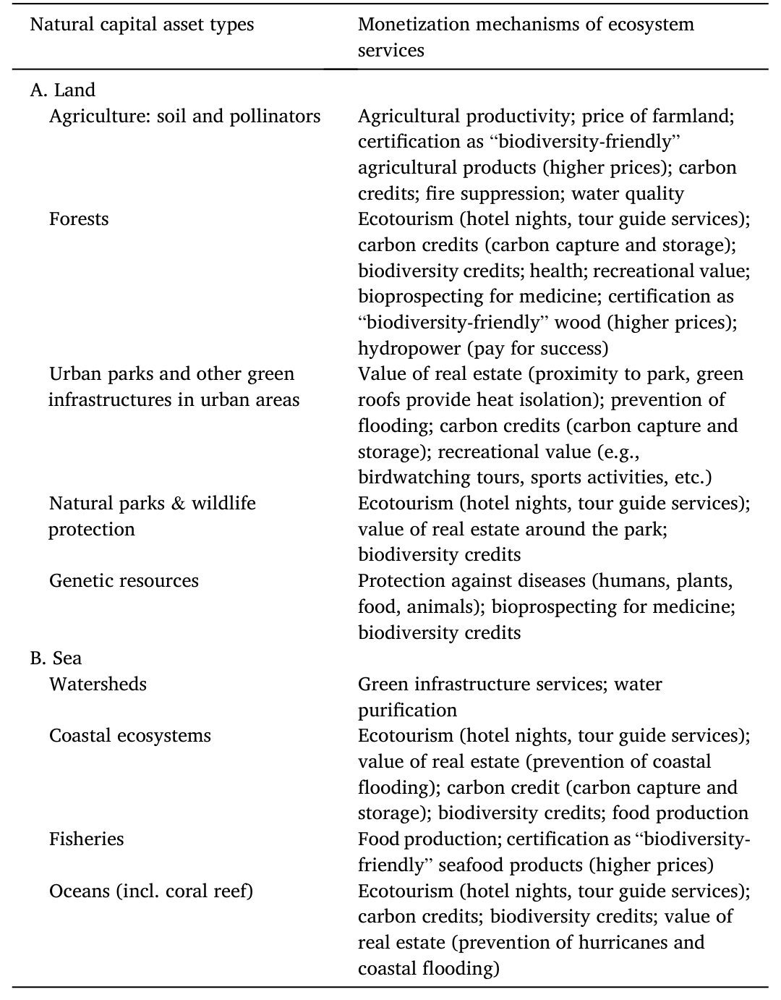
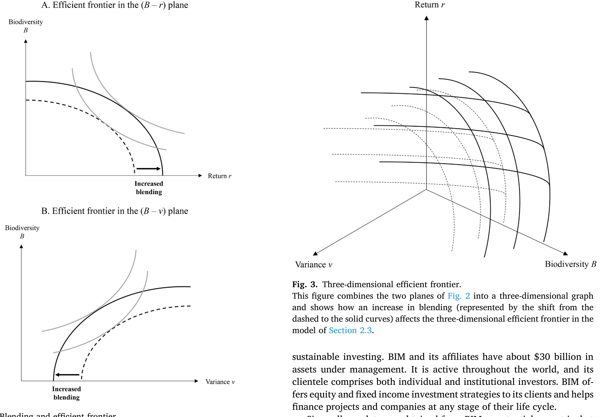
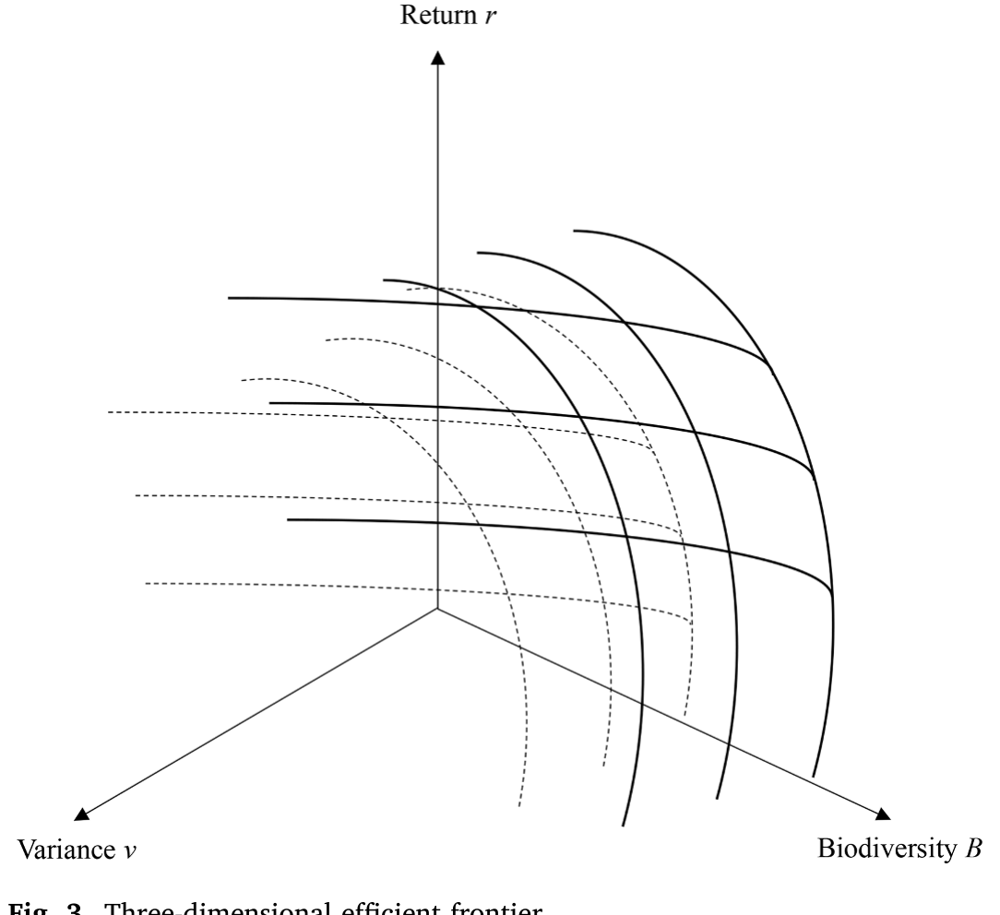
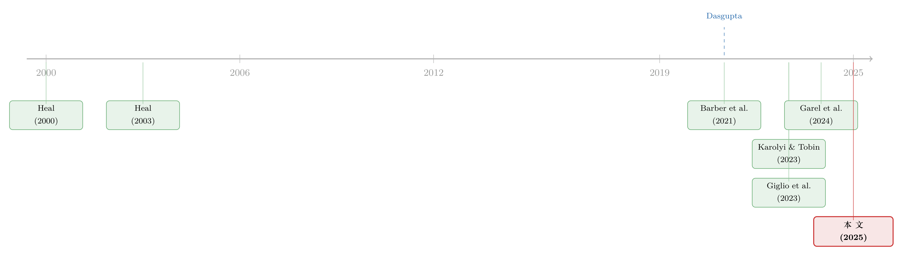

保护，而不是砍伐：当「不动一棵树」也能赚钱
本文读的是 Flammer, Giroux & Heal (2025, Journal of Financial Economics)：作者第一次用真实的交易级数据，回答了一个看似悖论的问题——保护（而非砍伐）自然如何为私人投资者赚到钱。他们提出一个「风险—收益—生物多样性影响」的三维有效前沿，并用一家头部机构的 33 笔生物多样性融资交易证明：风险收益本身就好看的项目走纯私人资本，而那些影响力更大、单靠市场吸引力不够的项目，要靠 混合融资 (blended finance) 把它「推」到私人投资者愿意买单的位置。
1 一个悖论式的开场
先讲一个让人有点不舒服的事实。世界自然基金会（WWF, 2022）的报告说，自 1970 年以来，全球哺乳类、鱼类、鸟类、爬行类和两栖类的种群规模平均萎缩了 69%，报告用了「code red（红色警报）」这个词。联合国（United Nations, 2022）则提醒我们，全世界一半以上的 GDP 依赖于自然及其提供的服务。生物多样性的流失，不是环保人士的浪漫情怀，而是一张正在变薄的资产负债表。
可问题来了。大自然保护协会（TNC, 2020）估算，要真正堵住这个缺口，每年还需要额外 722–967 亿美元（原文为 \$722–967 billion）的资金。公共财政和慈善捐赠加在一起也远远不够。于是一个自然的念头冒出来：能不能让私人资本进场？
但这里就有一道坎，而且是一道看上去几乎无解的坎。
传统上，自然能赚钱，靠的是改造它——伐木、采矿、把湿地填成楼盘。可生物多样性金融要做的恰恰相反：它要从保护自然里赚钱。一棵树站在那里不动，一片珊瑚礁安然无恙，你怎么从中拿到现金流？更麻烦的是，生物多样性几乎是一种典型的 公共品 (public good)：它的消费是非竞争性的，你也很难把不付钱的人排除在外。公共经济学讲了几十年的 搭便车问题 (free-rider problem) 和 偏好显示问题 (preference revelation problem)（Dasgupta, 2021；Heal, 2000）告诉我们，这种东西注定被低估、被供给不足。
所以真正的张力是：一个谁都不愿意单独付钱的公共品，怎么会有人拿真金白银去保护它，还指望赚回收益？
这篇论文，就是冲着这道坎来的。而且作者特别诚实地点出了学术上的空白：正如 Karolyi 和 Tobin-de la Puente（2023）那篇著名的「征集令」所言——「在金融学的顶级期刊里，还没有一篇研究界定过生物多样性流失的风险、它该如何被定价、私人融资又该如何中介化」。Laura Starks 在 2023 年美国金融学会主席演讲里也呼应了同一个缺口（Starks, 2023）。
2 关键的第一步：把生物多样性「变现」
要回答这道题，第一步不是金融工程，而是一个朴素得多的动作——变现 (monetization)。
作者借用了 Heal（2003, 2004）的核心洞见：从保护自然里赚钱并非天方夜谭，但它需要把生物多样性与某种私人品 (private good) 捆绑 (bundling) 在一起——而生物多样性恰恰能抬高那个私人品的价值。换句话说，你卖的不是「生物多样性」本身（那卖不动），你卖的是被它增值过的那个东西。
这听上去抽象，但例子一摆出来就豁然开朗：
- 保护农田里的传粉者（蜜蜂、甲虫、蝴蝶）→ 农田增产 → 农民利润上升；
- 保护森林生态 → 产生可以出售的碳信用 (carbon credits)，也可能带来生态旅游收入；
- 保护红树林等海岸生态 → 改善鱼类栖息地、抬高当地渔业收入，还能充当抵御洪水的天然屏障 → 抬高周边房地产价值。
作者在表 1 里把这套「自然资本类型 → 变现机制」的对应关系系统地列了出来。它是全文的地基：没有可信的变现机制，后面所有的金融结构都是空中楼阁。

Table 1: 2.2.2. De-risking mechanisms of blended finance
注意这里有个微妙之处：私人投资者能拿到三类回报——(i) 直接财务回报（变现机制产生的现金流）、(ii) 间接财务回报（生物多样性信用、碳信用）、(iii) 非财务的「生物多样性回报」。最后一类只有所谓 影响力投资者 (impact investors) 才真正在意。这条区分，会在后文反复发挥作用。
3 接着的难题：变现还不够，得「去风险」
可是，把生物多样性变现，只是让项目理论上能赚钱。现实里，这些项目的财务回报往往不够高、或者被认为太冒险，私人资本不肯进。
于是第二步登场了：混合融资 (blended finance)。
它的逻辑出奇简单：让公共或慈善资本（所谓 优惠性资本 / 让步性资本，concessionary capital）和私人资本「混」在一起，前者的目的不是分蛋糕，而是替私人资本去风险 (de-risk)、补贴它，从而把私人资本「拉进来（crowd in）」。
具体怎么去风险？作者分了两个层面、给出一整套机制（这是表 1 之外另一处很见功力的梳理）：
基金层面，三招—— - 优先级 (seniority)：让发展性金融机构（如世界银行的 MIGA、美国的 USAID、瑞典的 SIDA）以初级有限合伙人 (junior LP) 的身份先认购第一档资本，私人投资者作为高级 LP 后进、先获偿，风险自然降低； - 优先收益率 (preferred rate of return)：给私人投资者设一个更高的优先回报门槛； - 财务担保 (financial guarantees)：万一基金达不到优先收益率，由这些机构来补偿私人投资者。
项目层面，又分三类——优惠性融资 (concessional finance)、事前风险缓释 (ex-ante risk mitigation)（如设计与筹备拨款、技术援助拨款）、以及事后风险缓释 (ex-post risk mitigation)。
把这两步连起来，故事的骨架就清楚了：变现让项目「有可能」赚钱，混合融资把那个「有可能」推到私人投资者「愿意买」的位置。但真正关键的一步，是把这套话讲成一个可以被检验的经济学命题。
4 真正核心的一步：一个三维的有效前沿
这就是模型登场的地方。作者构建了一个非常克制的 均值—方差 (mean-variance) 组合选择模型，把上面那套直觉「钉」成了一个清晰的几何图像。
设想一组项目，每个项目 \(j\) 由三个数刻画：期望收益 \(\mu_j\)、收益方差 \(\sigma_j^2\)、以及生物多样性影响 \(b_j\)。一个均值—方差投资者，对项目的评价是经典的那把尺子：
$$ U_j = \mu_j - \frac{\gamma}{2}\,\sigma_j^2 $$
其中 \(\gamma\) 是风险厌恶系数。到这里都还是标准资产组合理论。论文真正的巧思，在于它如何刻画「混合融资」这个动作。作者假设：私人资本可以与优惠性资本按某个混合程度 (degree of blending) \(\lambda\) 混合，而提高 \(\lambda\) 会抬高项目的期望收益、压低其方差，却不改变它的生物多样性影响 \(b_j\)。
把这层机制塞进效用函数，最核心的那个方程就长这样：
为什么这个「\(b_j\) 不变」的假设如此关键？因为它把问题干净地降了一维。既然混合融资只在「风险—收益」平面上移动项目、而不触碰生物多样性影响，那么对任意给定的影响力水平 \(b\)，我们都可以问：把 \(\lambda\) 调到多大，才能让这个项目的 \((\mu, \sigma)\) 越过私人投资者愿意进场的那道门槛？
于是结论顺理成章地浮现：混合融资扩张了有效前沿。那些原本因为风险收益太差、被挤在有效集之外的高影响力项目，借助 \(\lambda\) 被「推」了进来。

Figure 2: Blending and efficient frontier. Since all our data are obtained from BIM, a potential caveat is that
把这层逻辑再叠加上生物多样性影响那一维，得到的就是论文的标志性图像——一个 三维「风险—财务收益—生物多样性收益」前沿。它说的是：你不可能三样都要到极致；在既定的风险与影响力下，财务收益有上限；想多要一点影响力，往往要在风险收益上让步，而让步的那部分，正是混合融资要去填的坑。

Figure 3: Three-dimensional efficient frontier
论文还做了一个我个人很喜欢的扩展：生物多样性投资面临更高的 模糊性 / 奈特不确定性 (Knightian uncertainty / ambiguity)——因为大家对这些变现机制不熟、又缺乏历史业绩。模糊性越高，就越需要「摸底 (fact-finding)」（跑试点、做概念验证、建立基线），而这恰恰可以由优惠性资本来出钱。结论是：模糊性越高，混合融资越有吸引力。这把「混合融资」从单纯的「补贴」升级成了「为信息付费」——一个更深刻的金融功能。
5 数据：33 笔交易，一扇罕见的窗
理论再漂亮，也得有数据。而这正是这个领域最稀缺的东西。
作者拿到了一家他们出于保密称为 「生物多样性投资管理人」(Biodiversity Investment Manager, BIM) 的头部机构的专有数据库。样本是 BIM 在 2020–2022 年间完成的全部 33 笔生物多样性融资交易。别嫌少——在这个几乎没有公开数据的领域，能拿到交易级、且包含预期生物多样性影响、交易结构、预期财务回报（IRR）、财务风险的逐笔信息，已经是极其难得的一扇窗。
更妙的是，BIM 还给了作者一批被否决的项目——那些曾被考虑纳入组合、最终却没进来的交易。这相当于给了一个天然的对照组，让我们能看到「门槛」到底长什么样。
6 于是反转出现：钱往哪儿走，是有规律的
把这 33 笔交易摊开，几个事实清晰得让人意外。
第一，约 60% 的交易由纯私人资本完成，剩下约 40% 是混合融资。两条腿都重要，谁也替代不了谁。
第二，也是最点睛的一笔：期望财务回报更高的交易，倾向于走纯私人资本——它们的平均预期 IRR 是 15%，而混合融资交易只有 12%。但纯私人资本的项目规模更小，生物多样性影响也更小。反过来，那些规模更大、影响力更雄心勃勃的项目，更多采用混合融资；它们的预期回报更低，但风险也更小（以偏离预期 IRR 的潜在幅度衡量）。
这正是模型预言的画面：混合融资通过去风险，改善了这些项目的风险—收益权衡，从而把它们「推」到了对私人投资者有吸引力的位置。利润丰厚的项目，纯私人资本就能消化，但它们影响力小；影响力大的项目利润薄，却能靠混合融资「够」到私人投资者。一个财务收益与生物多样性影响之间的权衡，跃然纸上。
第三，再看那批被否决的项目。和进了组合的相比，它们一开始就更不赚钱、影响力也更低。这说明两件事：(i) 交易得先迈过某个风险—收益门槛，才谈得上吸引私人投资者；(ii) 而生物多样性影响也得足够大，混合融资才用得上。换句话说，对于给定的影响力，混合融资并非万能——如果项目原始的（混合之前的）风险收益太差，再怎么「推」也推不到水面上。
于是作者落到了一个相当克制、也相当诚实的结论上：私人资本（无论单独还是混合形式）都不是对抗生物多样性危机的「银弹」。它能帮忙缩小融资缺口，是工具箱里有用的一件，但它不太可能替代有效的公共政策。这一点，和「卖掉一只脏股票就能拯救世界」的天真想象恰成对照（关于撤资到底有没有用、成本几何，可参见《卖掉一只「脏」股票，真能改变世界吗？》）。
7 文献脉络
这篇论文站在两条河流的交汇处。
一条源自环境经济学。早在世纪之交，Heal（2000）的《Nature and the Marketplace》就在追问如何「捕获」生态系统服务的价值，随后 Heal（2003, 2004）提出了「捆绑生物多样性」这一关键思想——它正是本文「变现机制」的理论母体。到了 Dasgupta（2021）那部影响深远的《生物多样性经济学评论》，这条脉络达到了一个集大成的高点，把生物多样性作为公共品的供给难题摆到了全球政策的中心。
另一条源自可持续金融，而它此前几乎全部的注意力都给了气候：碳风险是否被定价（Bolton & Kacperczyk, 2021, 2023）、绿色债券（Flammer, 2021）、气候风险与机构投资者（Krueger et al., 2020；Ilhan et al., 2023）、绿色收益的来源（Pastor et al., 2022）。与此并行的，是影响力投资这一支：它的实现机制（Barber, Morse & Yasuda, 2021；Geczy et al., 2021）、以及投资者是否真在乎影响力（Heeb et al., 2023）。
直到最近，金融学才开始把目光转向生物多样性本身——但起步处几乎都在「定价」一侧：生物多样性风险如何影响股价（Giglio et al., 2023；Garel et al., 2024；Coqueret et al., 2025；Xiong, 2023）。而 Karolyi 和 Tobin-de la Puente（2023）的「征集令」点破了真正的空白：没有人研究私人资本该如何中介化地流向生物多样性。

本文恰好补上的，就是这块拼图——它不在「风险定价」一侧，而在「融资结构」一侧，第一次用真实交易数据刻画了私人资本进入自然保护的微观机制。它和作者团队自己的工作（Flammer, Giroux & Heal, 2024 的「Blended Finance」工作论文）一脉相承，是把混合融资这个一般性工具，落到生物多样性这个最棘手的公共品场景上的一次实证落地。
8 评论与延伸（Q&A + 研究方向）
(a) 几个可能的疑问
Q：这和「影响力投资」(impact investing) 到底有什么区别？
论文专门用一节做了对比。粗略地说，影响力投资强调投资者主动让渡财务回报去换取社会/环境影响；而生物多样性金融的核心是变现——先把保护变成一门能产生财务现金流的生意，混合融资只是用公共资本去改善风险收益、而非要求投资者牺牲回报。前者偏「偏好」，后者偏「工程」。当然两者高度重叠：在意第三类「非财务生物多样性回报」的，正是影响力投资者。
Q：混合融资是不是只是「补贴」的花式包装？会不会反而挤出公共资金？
这是最该警惕的质疑。论文的回答是：混合融资的价值不止于补贴，更在于去风险和为信息付费（资助 fact-finding）——它动的是风险与不确定性，而非单纯送钱。但「会不会挤出本可直接用于保护的公共资金」「私人回报是否来自对公共补贴的套利」，论文用
33笔交易回答不了，这是它诚实承认的局限。
Q：「三维前沿」听上去很花哨，实证上凭什么说它真的存在？
靠三组相互印证的事实：(i) 高 IRR（
15%）项目走纯私人、低 IRR（12%）高影响力项目走混合；(ii) 混合融资项目回报低但风险也低，符合「去风险换影响力」；(iii) 被否决项目在「不赚钱」和「影响力低」两端都更差，勾勒出前沿的「门槛」。这是描述性证据的相互佐证，而非因果识别。
Q：只有 33 笔交易、还来自单一机构，结论可信吗？
作者非常坦白：这是个小样本，且都是 BIM 一家的交易，存在样本选择问题（数据本身就来自一个「成功的」机构）。他们把这篇定位为「理解生物多样性金融的第一步」，并明确寄望于未来更大的数据集。读者应把它当作开拓性的事实记录，而非已被反复验证的规律。
Q：这些数字大多是「事前」(ex-ante) 的预期 IRR，靠谱吗？
这是另一个硬约束。由于交易仍在存续，作者主要依赖交易完成时点的事前预测，事后业绩信息有限（论文用 Figure 6 做了初步呈现）。预期 IRR 与最终实现回报之间的差距，尤其在这个缺乏历史业绩、模糊性高的领域，完全可能很大。
Q：把生物多样性「变现」，会不会反而激励了漂绿？
值得担心。论文也提到，碳信用与生物多样性信用本身在度量、估值与漂绿上争议重重（Bloomberg, 2022；The Guardian, 2023；West et al., 2023）。一旦「保护」能变现，就可能诱导出名不副实的信用。这恰恰说明，私人资本需要可信的度量与公共监管来约束，再次呼应了「私人资本替代不了公共政策」这一结论。
(b) 几个可能的研究问题与提案
1. 生物多样性风险与公司债定价、流动性。
【经济故事】现有的「生物多样性定价」文献几乎全在股票一侧（Giglio et al., 2023；Garel et al., 2024）。但对暴露于自然风险的行业（农业、渔业、林业、保险），冲击首先砸的是违约风险和信用利差，债券应当比股票更敏感。【可行性】中。需要把企业层面的生物多样性足迹/暴露度（可借 TNFD 框架或文本度量构造）匹配到
TRACE的公司债成交与利差上；识别可用自然灾害/物种红色名录更新等准外生事件做事件研究。难点在度量指标的可信度。
2. 主权生物多样性债券里的外资持有人。
【经济故事】债务换自然 (debt-for-nature swaps)、犀牛债、主权海洋债——这些工具的买方结构、尤其是外资机构持有人的进出，可能决定其定价与二级市场流动性。这与我自己关心的「外资持有人 × 信用市场流动性」高度契合。【可行性】中。需要逐笔搜集主权生物多样性债券的发行与持有数据（较碎，但 BIOFIN、OECD 等有部分披露），识别上可比对相近期限的普通主权债。
3. 优惠性资本的「去风险」能否在二级信用市场被度量出来？
【经济故事】本文模型说混合融资压低了私人档的方差。如果某些混合融资项目对应可交易的信用工具，那么 seniority/担保结构应当在利差和回收率预期上留下可观测的「去风险溢价」。【可行性】低到中。瓶颈是这类交易绝大多数是私募、非公开，缺乏二级价格；可先在有公开评级的少量混合融资基金上做探索性分析。
4. 自然相关披露 (TNFD) 与机构投资者的组合再平衡。
【经济故事】类比气候风险披露的研究（Ilhan et al., 2023），TNFD 的推行会不会让机构投资者系统性地调整对高自然暴露企业的持仓，从而改变这些企业股票/债券的需求与流动性？【可行性】中。需要 13F/持仓数据叠加企业自然暴露度，识别可用 TNFD 分阶段采用作为冲击。这是把本文「融资侧」的故事，接回「二级市场需求侧」的一条自然路径。
9 我的判断
先说贡献。这篇论文最大的价值，不在某个精巧的识别，而在它第一个把「生物多样性金融」从一句口号，落成了可观测的微观结构——变现机制的分类、混合融资的去风险工具箱、以及那个干净的三维前沿框架，加上一份在这个领域近乎绝无仅有的交易级数据。在一个连「有没有数据」都成问题的领域，把基本事实摆清楚，本身就是重要的学术公共品。它对 Karolyi 和 Tobin-de la Puente（2023）那声呼吁，是一个扎实的回应。
再说担忧。识别上，这篇本质是描述性的：33 笔交易、单一机构、以事前预期为主、且数据天然来自一个「成功者」。「高影响力项目用混合融资」既可能是模型说的去风险机制，也可能只是 BIM 这家机构的偏好或所处细分市场的产物——我们没有反事实。三维前沿是一个自洽且优美的解释，但还谈不上被因果地证实。
我最想看到的后续有两条。其一，事后业绩：等这些交易走完生命周期，预期 IRR 和真实回报差多少？那个 15%/12% 的差距能不能站得住？其二，走向信用与外资市场：把这套「融资结构」的洞见，接到可交易的主权/公司信用工具上去，看外资持有人和流动性如何回应自然风险。生物多样性金融真正要长大，迟早得在二级市场里被定价、被交易、被流动性检验——而那，恰是更值得我们这些做信用市场的人盯住的地方。
参考文献
- Barber, B. M., Morse, A., & Yasuda, A. (2021). Impact investing. Journal of Financial Economics 139(1), 162–185.
- Barrett, S. (2022). A biodiversity hotspots treaty: the road not taken. Environmental and Resource Economics 83(4), 937–954.
- Bolton, P., & Kacperczyk, M. T. (2021). Do investors care about carbon risk? Journal of Financial Economics 142(2), 517–549.
- Bolton, P., & Kacperczyk, M. T. (2023). Global pricing of carbon-transition risk. Journal of Finance 78(6), 3677–3754.
- Coqueret, G., Giroux, T., & Zerbib, O. D. (2025). The biodiversity premium. Ecological Economics 228, 108435.
- Dasgupta, P. (2021). The Economics of Biodiversity: The Dasgupta Review. HM Treasury, London.
- Flammer, C. (2021). Corporate green bonds. Journal of Financial Economics 142(2), 499–516.
- Flammer, C., Giroux, T., & Heal, G. M. (2024). Blended finance. NBER Working Paper 31022.
- Flammer, C., Giroux, T., & Heal, G. M. (2025). Biodiversity finance. Journal of Financial Economics 164, 103987.
- Garel, A., Romec, A., Sautner, Z., & Wagner, A. F. (2024). Do investors care about biodiversity? Review of Finance 28(4), 1151–1186.
- Geczy, C. C., Jeffers, J., Musto, D. K., & Tucker, A. M. (2021). Contracts with (social) benefits: the implementation of impact investing. Journal of Financial Economics 142(2), 697–718.
- Giglio, S., Kuchler, T., Stroebel, J., & Zeng, X. (2023). Biodiversity risk. NBER Working Paper 31137.
- Heal, G. M. (2000). Nature and the Marketplace: Capturing the Value of Ecosystem Services. Island Press, Washington, DC.
- Heal, G. M. (2003). Bundling biodiversity. Journal of the European Economic Association 1(2–3), 553–560.
- Heal, G. M. (2004). Economics of biodiversity: an introduction. Resource and Energy Economics 26(2), 105–114.
- Heeb, F., Kölbel, J. F., Paetzold, F., & Zeisberger, S. (2023). Do investors care about impact? Review of Financial Studies 36(5), 1737–1787.
- Karolyi, G. A., & Tobin-de la Puente, J. (2023). Biodiversity finance: a call for research into financing nature. Financial Management 52(2), 231–251.
- Krueger, P., Sautner, Z., & Starks, L. T. (2020). The importance of climate risks for institutional investors. Review of Financial Studies 33(3), 1067–1111.
- Pastor, L., Stambaugh, R. F., & Taylor, L. A. (2022). Dissecting green returns. Journal of Financial Economics 146(2), 403–424.
- Starks, L. T. (2023). Sustainable finance and ESG issues: values versus value (presidential address). Journal of Finance 78(4), 1837–1872.
- TNC (2020). Closing the Nature Funding Gap: A Finance Plan for the Planet. The Nature Conservancy, Arlington, VA.
- WWF (2022). Living Planet Report 2022. World Wildlife Fund, Washington, DC.